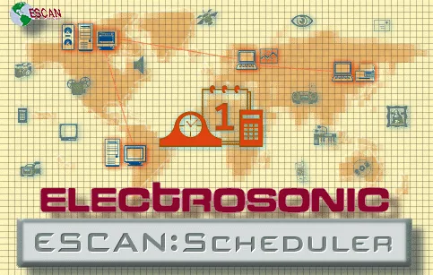
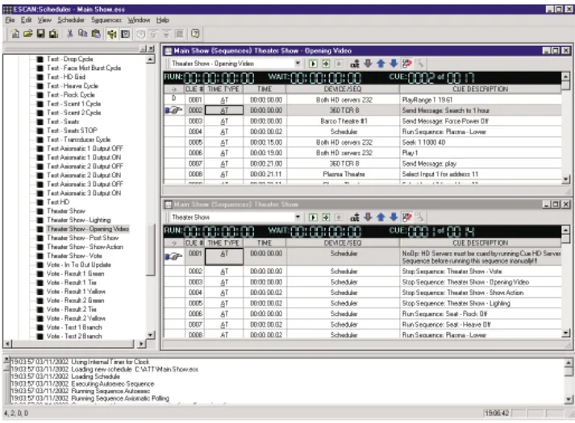
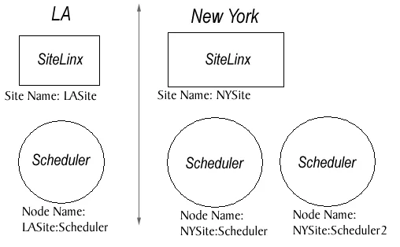
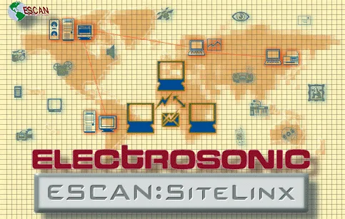
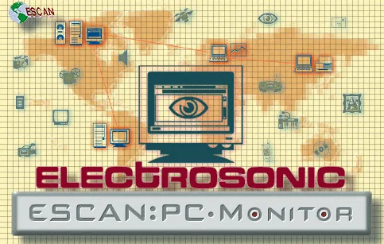
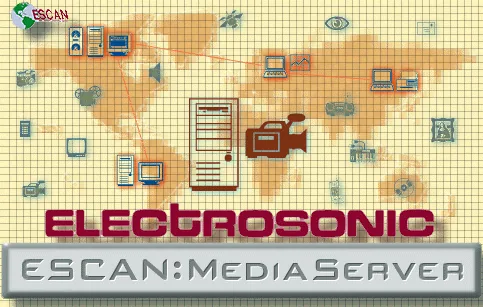
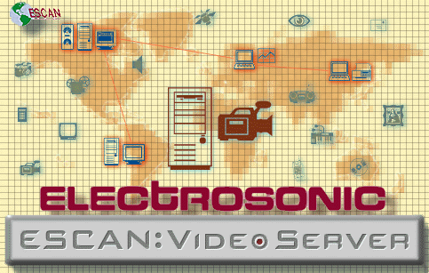

Electrosonic Projects
Senior Programmer Analyst — Staff · Jan 2000 – Apr 2001 · Burbank, CA
- CommLib: DLL, rewrote winsock to handle double buffering for better performance
- MonitorDLL: DLL to monitor computers, servers or other devices through CommLib Winsock TCP/IP
- LiquidAudio streaming control: Designed as an ActiveX control, used to stream audio
- ESCAN Application and related tools
- ESCAN: 2nd version of the Scheduler — visually script and schedule devices locally or remote
- SiteLinx: connect two ESCAN servers through email
- PC_Monitor: Win32 app to monitor a PC
- PC_Server: Win32 app to monitor a Video Server
- DeviceSimulator: Create devices for testing or simulation
- XML ActiveX control: import data from a database and export to xml files
- Email ActiveX control: used to send/read email
- Custom Applications: Voting System for the SHOA Foundation, Event generation devices for AMNH, etc.
Work Performed
Designed, coded, tested, profiled and documented applications and tools and proposed changes and additions. Responsible for full development cycle. Worked in team environments. Served as mentor to other programmers and technicians.
Conceived, designed and developed application for remote control and monitoring using C++, COM+, MAPI, TAPI, RAS.
Improved serial port and internet connectivity DLL which provided support for most applications. Developed second version, maximized capacity and transfer speed using C++, raw sockets, multi-threading, network events and double buffering.
Took ownership of application that controls and interacts with network and embedded devices. Developed protocols, device interfaces, ActiveX and ATL controls; extended application's and device's capabilities. Developed second version with many enhancements: MDI GUI, scripting capabilities, XML format, device triggers, email reporting plus many others.
Developed applications, tools and controls to support projects: Database, printing, MPEG encoding, hardware programming, device driver interface for video hardware to output graphics and text to TV screens, magnetic cards scanning, touch panels, Real Audio streaming control and device.
Adapted and implemented systems and applications for: American Museum of Natural History in New York, Museum of Tolerance in Beverly Hills, The Country Music Hall of Fame in Nashville, The Shoa Foundation in Universal Studios and others.
From the project archive
The original project archive holds 23 source files (C++), 5 design documents and 1 note. They are not published here because they belong to Electrosonic; I’m happy to walk through the design and code in an interview.
Screenshots







Interested in working together?